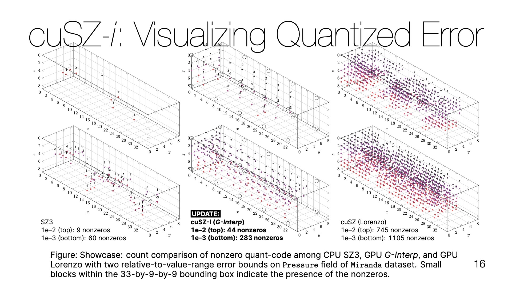
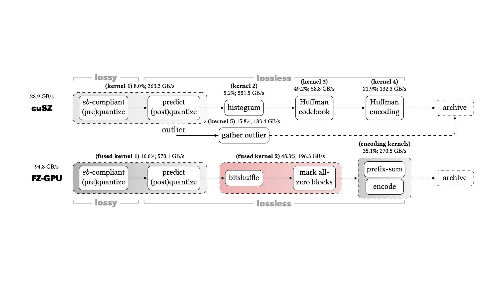
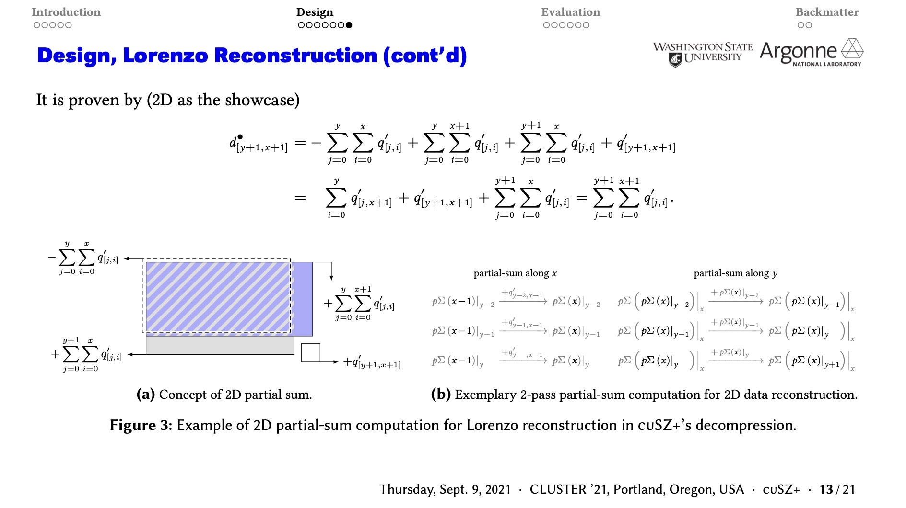
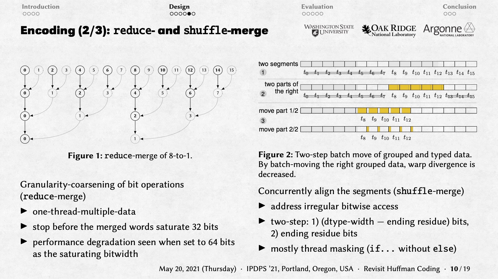
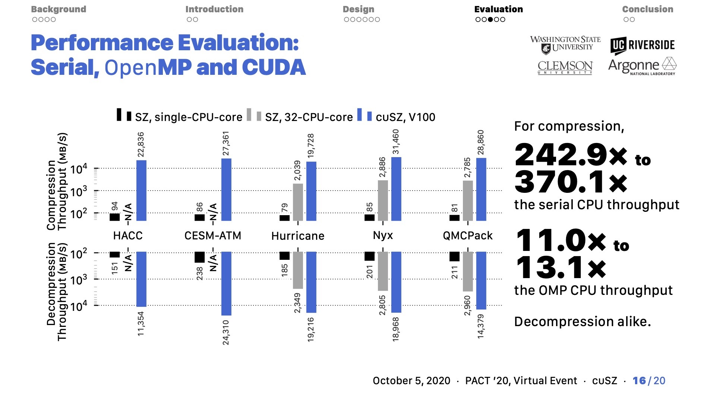
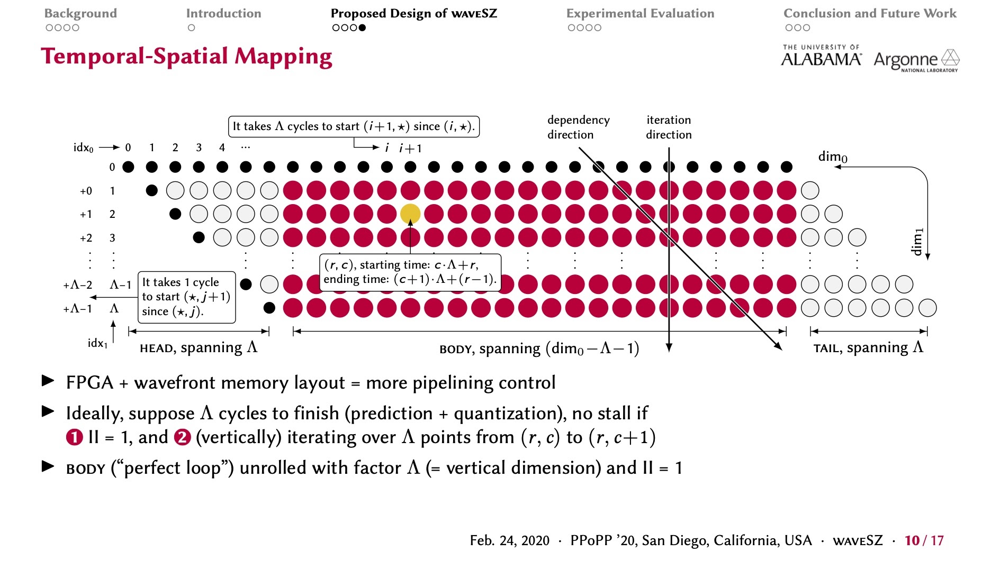

Presentations
Peer-reviewed papers and the talks that went with them.
-

-

-

CLUSTER '21cuSZ+
Optimizing Error-Bounded Lossy Compression for Scientific Data on GPUs PaperSlides
Abstract
Our key contributions in this work are fourfold: (1) We propose an efficient compression workflow to adaptively perform run-length encoding and/or variable-length encoding. (2) We derive Lorenzo reconstruction in decompression as multidimensional partial-sum computation and propose a fine-grained Lorenzo reconstruction algorithm for GPU architectures. (3) We carefully optimize each of cuSZ kernels by leveraging state-of-the-art CUDA parallel primitives. (4) We evaluate cuSZ+ using seven real-world HPC application datasets on V100 and A100 GPUs. Experiments show cuSZ+ improves the compression throughputs and ratios by up to 18.4× and 5.3×, respectively, over cuSZ on the tested datasets.
-

IPDPS '21Huffman ReVISIT
Toward Extreme Performance on Modern GPU Architectures PaperSlides
Abstract
The detailed contribution is four-fold. (1) We develop an efficient parallel codebook construction on GPUs that scales effectively with the number of input symbols. (2) We propose a novel reduction-based encoding scheme that can efficiently merge the codewords on GPUs. (3) We optimize the overall GPU performance by leveraging the state-of-the-art CUDA APIs such as Cooperative Groups. (4) We evaluate our Huffman encoder thoroughly using six real-world application datasets on two advanced GPUs and compare it with our implemented multi-threaded Huffman encoder. Experiments show that our solution can improve the encoding throughput by up to 5.0× and 6.8× on NVIDIA RTX 5000 and V100, respectively, over the state-of-the-art GPU Huffman encoder, and by up to 3.3× over the multi-thread encoder on two 28-core Xeon Platinum 8280 CPUs.
-

PACT '20cuSZ
A High-Performance GPU Based Lossy Compression Framework for Scientific Data PaperSlides
Abstract
Our contributions are fourfold. (1) We propose a dual-quantization scheme to entirely remove the data dependency in the prediction step of SZ such that this step can be performed very efficiently on GPUs. (2) We develop an efficient customized Huffman coding for the SZ compressor on GPUs. (3) We implement cuSZ using CUDA and optimize its performance by improving the utilization of GPU memory bandwidth. (4) We evaluate our cuSZ on five real-world HPC application datasets from the Scientific Data Reduction Benchmarks and compare it with other state-of-the-art methods on both CPUs and GPUs. Experiments show that our cuSZ improves SZ's compression throughput by up to 370.1× and 13.1×, respectively, over the production version running on single and multiple CPU cores, respectively, while getting the same quality of reconstructed data. It also improves the compression ratio by up to 3.48× on the tested data compared with another state-of-the-art GPU-supported lossy compressor.
-

PPoPP '20waveSZ
A Hardware-Algorithm Co-Design of Efficient Lossy Compression for Scientific Data PaperSlides
Abstract
Our contributions are fourfold. (1) We adopt a wavefront memory layout to alleviate the data dependency during the prediction for higher-dimensional predictors, such as the Lorenzo predictor. (2) We propose a co-design framework named waveSZ based on the wavefront memory layout and the characteristics of SZ algorithm and carefully implement it by using high-level synthesis. (3) We propose a hardware-algorithm co-optimization method to improve the performance. (4) We evaluate our proposed waveSZ on three real-world HPC simulation datasets from the Scientific Data Reduction Benchmarks and compare it with other state-of-the-art methods on both CPUs and FPGAs. Experiments show that our waveSZ can improve SZ's compression throughput by 6.9×∼8.7× over the production version running on a state-of-the-art CPU and improve the compression ratio and throughput by 2.1× and 5.8× on average, respectively, compared with the state-of-the-art FPGA design.